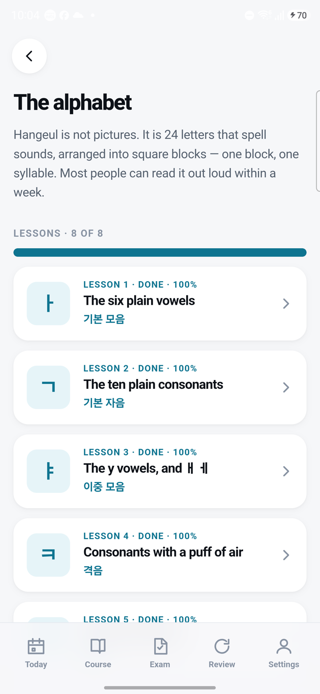
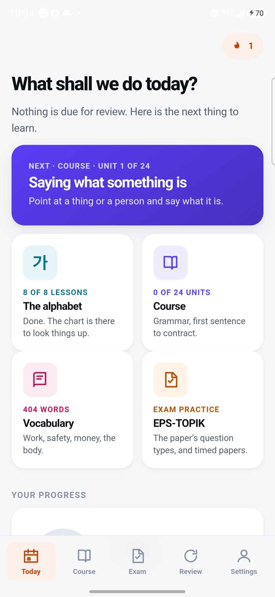

A proposal, not yet applied. The current app on the left, the proposal on the right, then the two ways a finished card could change colour. Use the buttons to try dark mode and to compare Pretendard against the phone's own font.
CalmQuietPreciseWarmUnhurried
THE ALPHABET LIST · BEFORE AND AFTER
Now

Proposed: a line along the top, and a tinted card once finished
The alphabet
Hangeul is not pictures. It is 24 letters that spell sounds, arranged into square blocks: one block, one syllable.
Lessons6 of 8
ㅏLesson 1100%The six plain vowels기본 모음
ㄱLesson 286%The ten plain consonants기본 자음
ㅑLesson 3 · card 17 of 21The y vowels, and ㅐ ㅔ이중 모음
ㅋLesson 4 · Up nextConsonants with a puff of air격음
ㄲLesson 5Tense consonants경음
TODAY · BEFORE AND AFTER
Now

Proposed
● 1 day
What shall we do today?
Nothing is due for review. Here is the next thing to learn.
Next · Course · Unit 1 of 24Saying what something is
Point at a thing or a person and say what it is.
가8 of 8 lessonsThe alphabet
0 of 24 unitsCourse
404 wordsVocabulary
Exam practiceEPS-TOPIK
WHEN A LESSON IS FINISHED · TWO STRENGTHS
A · Tinted Chosen
The card takes a light wash of the section colour and its tile turns solid. Clearly finished, and a list of eight finished lessons still reads calmly.
ㅏLesson 1100%The six plain vowels기본 모음
ㄱLesson 286%The ten plain consonants기본 자음
ㅑLesson 3 · card 17 of 21The y vowels, and ㅐ ㅔ이중 모음
B · Solid Chosen in round 2
The whole card fills with the colour. The biggest reward, but once every lesson is done the screen is a wall of teal, and each card looks like the one hero card per screen.
ㅏLesson 1100%The six plain vowels기본 모음
ㄱLesson 286%The ten plain consonants기본 자음
ㅑLesson 3 · card 17 of 21The y vowels, and ㅐ ㅔ이중 모음
FINISHED CARDS AGAINST THE PAGE · ROUND 2
Now · 9% tint
What is on your phone. Too close to the page to see at a glance.
ㅘLesson 6100%Vowels that slide합성 모음
받Lesson 7100%Closing sounds받침
음Lesson 878%How blocks change each other발음 규칙
A · 20% tint Not chosen
Twice the colour, so a finished card reads at arm's length. The score is drawn a shade deeper to stay readable.
ㅘLesson 6100%Vowels that slide합성 모음
받Lesson 7100%Closing sounds받침
음Lesson 878%How blocks change each other발음 규칙
B · Solid Chosen
Unmistakable, but a finished section becomes a wall of one colour.
ㅘLesson 6100%Vowels that slide합성 모음
받Lesson 7100%Closing sounds받침
음Lesson 878%How blocks change each other발음 규칙
PALETTE · CONTRAST MEASURED AGAINST WHITE (LIGHT) AND #17181B (DARK)
TYPE
Display 30 / 700The alphabet
Title 21 / 680Saying what something is
Card title 16.5 / 620The ten plain consonants
Body 16 / 400Point at a thing or a person and say what it is.
Korean 22 / 600이것은 여권입니다.
Meta 12.5 / 500Lesson 3 · 이중 모음
BUTTONS AND ICONS
WHAT WOULD CHANGE
Colour steps back. Section colours stay, so screens are still quick to scan, but they are deeper and quieter, and they appear only on the icon glyph, the pill and the progress line. Icon tiles go neutral grey. Buttons and the Today card turn deep navy, the same navy as the app icon.
Less shouting in the type. The tracked-out capitals ("LESSON 1 · DONE · 100%") become a small grey "Lesson 1", with the score moved into the pill. Headings get lighter. Korean subtitles turn grey instead of coloured.
Thinner lines. The progress bar goes from 10px to 4px and icon strokes from 1.9 to 1.7. Shadows get softer.
A calmer tab bar. The active tab loses its coloured block and gets dark ink with a small dot under it.
Same bones. 48px touch targets, one card component, the 4pt spacing, motion behind reduced-motion, every screen and route. Only the surface changes.
Progress is a line, not a pill. A 3px line along the top of a card shows how far through it you are. When you finish it, the card turns its section colour. Any score sits as a small number in the card's top row.
Screens affected: all of them, because the change goes through the shared tokens. The line appears on alphabet lessons, course units, vocabulary sets and exam question types.